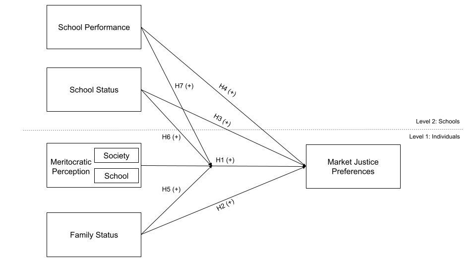

Justification of inequality and market justice
The justification of social inequality based on market-type criteria has been conceptualized as the individuals’ adherence to the deservingness of social goods and services (such as health, education, and pensions) based on prices and individuals’ ability to pay (Boltanski & Chiapello, 2005; Lane, 1986; Streeck, 2012). Research on social stratification beliefs, which explore individual perceptions of who deserves what and why (Kluegel & Smith, 1987), highlights that people’s explanations and justifications of social inequality are closely tied to their judgments of deservingness. The influence of ideologies (Wegener & Liebig, 1995) and cultural schemas (Homan et al., 2017) is pivotal in shaping these explanations by offering symbolic representations that frame societal structures and expectations. While significant attention has been paid to wage inequality, income distribution, and payment differentials in the literature [Castillo (2011); Evans et al., 2010; Jasso (1999) ; Shariff et al. (2016)], there has been less examination of public beliefs about which life domains should be governed by market relations and even less about children’s acceptance or rejection of these market principles. This oversight is notable given the extensive encroachment of market logic into public goods, welfare policy, and social services over the past five decades (Centeno & Cohen, 2012; Harvey, 2015), affecting areas such as pensions, health services, and education.
There are substantial differences in funding and delivery methods in the management of social services across nations (Jensen, 2008; Stoy, 2014). Nordic countries, for example, predominantly employ public agencies to produce and provide social services, funding these through collective taxation and offering them in kind to the majority of citizens. This system prioritizes social justice, placing it above market mechanisms in accessing services. In contrast, other countries rely more heavily on for-profit entities and private funding, where service distribution depends mainly on individual financial capacity to pay user fees, highlighting the influence of market justice in service allocation. The trend toward marketization of welfare services has been growing since the 1980s (Salamon, 1993), and this shift is increasingly evident even in countries where market solutions have traditionally had a minor role in social policy (Sivesind, 2017). The expansion of marketization has been related to a larger justification of market mechanisms, whereby societies with larger private spending on services show larger market justice preferences (Lindh, 2015).
Robert E. Lane proposed the underpinnings of the concept of market justice, which he differentiated from political justice. For him, “it is the genius of the market to stimulate wants without at the same time stimulating a sense of deserving more than one gets” [-Lane (1986); p. 384]. Contrary to the evidence that unequal distribution produces feelings of dissatisfaction, anger, and resentment that might motivate forms of collective action (Greitemeyer & Sagioglou, 2016; Mishra & Carleton, 2015; Séamus A. Power, 2018; Séamus A. Power et al., 2020; Smith et al., 2012), Lane pointed out that in market settings, social comparisons are more likely to motivate increased effort rather than feelings of acute injustice because individuals attribute outcomes to their actions. In this sense, unequal levels of well-being would be, to some extent, a function of their talents and efforts, instead of being based on distributive principles that characterize welfare states, such as need and equality (see Wilson 2003).
Despite high-income inequality and limited social mobility in Chile, and in Latin America in general, there is a prevalent belief that individuals are solely responsible for their economic outcomes, a view that varies across the region (Bucca, 2016; Chong & Ñopo, 2008; Salgado & Castillo, 2023; Torche, 2014). The reliance on private welfare providers and widespread user fees (Molyneux, 2008) adds complexity to this context, as reflected in surveys conducted by the Center for Public Studies (CEP). According to this data, 35.9% prefer private health insurance, and 63% would prefer private education. Yet, research on children’s justification in this area remains limited, highlighting a significant gap in understanding how younger generations view market-based access to welfare and whether these views are associated with their meritocratic beliefs.
Meritocratic perceptions and market justice
The original definition of merit is a combination of effort and talent (Young, 1958), and a meritocracy is a distributive system where merit is the main criterion for allocating valuable goods and rewards. From a sociological perspective, meritocracy has been used in research on social mobility to characterize societies with low mobility that threaten the meritocratic ideal (Goldthorpe, 2003). More recently, sociology and social psychology research has attended to subjective aspects related to the support for meritocratic principles in different societies, such as beliefs in meritocracy (Castillo et al., 2023; J. Mijs, 2019; J. J. B. Mijs, 2016).
Meritocratic beliefs can cover two types of subjective processes: preferences and perceptions (Castillo et al., 2023). While meritocratic preferences refer to a justification of distribution based on merit criteria (effort and talent), the perception of meritocracy refers to how individuals view and understand the concept of meritocracy in their society (Castillo et al., 2019; Duru-Bellat & Tenret, 2012). The perception can vary greatly depending on individual experiences, as well as social, economic, and cultural background. Some people may see meritocracy as a fair and just system that allows anyone to succeed based on their abilities and hard work. In contrast, others may view it as a myth or a cover for existing power dynamics and inequality, serving to maintain and even reinforce inequality (Lampert, 2013; J. Mijs, 2019). Some studies have analyzed how those with greater privileges believe more in meritocracy (Reynolds & Chan 2014), how greater economic inequality increases meritocratic beliefs (J. Mijs, 2019), and how larger inequality decreases it (Morris et al., 2022).
A larger justification of meritocratic distribution has been related to less support for redistributive compensation systems (Frank et al., 2015), as individual achievement would be seen as rewarded and social policies as less necessary. Almås et al. (2020) found that in the US the highly educated accept inequality significantly more than the less educated because they perceive inequality as justifiable owing to differences in productivity (i.e., merit). (barr_effect_2020?) found that in unequal societies, the highly educated accept inequality more than the low educated. Conversely, individuals tend to support redistribution when they believe that the disadvantaged lack the opportunities to succeed (Evans & Kelley, 2018).
Schools contribute to institutionalizing and reproducing inequality by promoting values, norms, practices, and languages familiar to higher-class families because the dominant group’s culture shapes educational institutions (Bourdieu & Passeron, 1990). Middle- and upper-class students are better equipped to face academic challenges and are more familiar with academic expectations (mikus_children_2020?). Such familiarity represents cultural capital in educational contexts because higher-status students come to school ready to meet these expectations and reap the benefits (Jack, 2016; Khan, 2011). Conversely, lower-status children lacking cultural capital must catch up while experiencing inequitable comparisons (Goudeau & Croizet, 2017). Additionally, academic achievement is treated as the outcome of dispositional factors (e.g., pupils’ efforts and talents or lack of them) rather than the result of differential access to critical resources. Due to the meritocratic frame schools encourage, both low- and high-status individuals tend to believe that success or failure is not due to the family background but rather to differences in efforts and talents (Darnon et al., 2018). In this sense, we believe that the perception of meritocracy can influence students’ judgments about market justice preferences, leading to our first hypothesis:
\(H_{1a}\): Students who perceive that there is more meritocracy in society will show larger market justice preferences
The perception of meritocracy has been mostly studied with general questions about reward allocation based on effort and talent (usually intelligence). Nevertheless, when looking at the school population it is possible to further consider the perception of meritocracy referred specifically to the school context. For instance, Resh (2010) find that perception of justice in grades has a positive effect on liberal democratic orientation, and trust in people and formal institutions (Resh & Sabbagh, 2014). Attending to this evidence, we differentiate in this study between meritocratic perception in society at large, and meritocratic perception at school, proposing the next hypothesis:
\(H_{1b}\): Students who perceive that there is more meritocracy at school will show larger market justice preferences
References
Acemoglu, D. (2021). Obedience in the labor market and social mobility: A socio-economic approach (No. w29125) (p. w29125). Cambridge, MA: National Bureau of Economic Research. https://doi.org/10.3386/w29125
Almås, I., Cappelen, A. W., Salvanes, K. G., Sørensen, E. Ø., & Tungodden, B. (2017). Fairness and family background. Politics, Philosophy & Economics, 16(2), 117–131. https://doi.org/10.1177/1470594x15618966
Almås, I., Cappelen, A. W., & Tungodden, B. (2020). Cutthroat capitalism versus cuddly socialism: Are americans more meritocratic and efficiency-seeking than scandinavians? Journal of Political Economy, 128(5), 1753–1788. https://doi.org/10.1086/705551
Boltanski, L., & Chiapello, E. (2005). The new spirit of capitalism. London ; New York: Verso.
Bourdieu, P., & Passeron, J. C. (1990). Reproduction in education, society and culture (Second Edition). Sage Publications Ltd.
Bucca, M. (2016). Merit and blame in unequal societies: Explaining latin americans’ beliefs about wealth and poverty. Research in Social Stratification and Mobility, 44, 98–112. https://doi.org/10.1016/j.rssm.2016.02.005
Castillo, J. C. (2011). Legitimacy of inequality in a highly unequal context: Evidence from the chilean case. Social Justice Research, 24(4), 314–340. https://doi.org/10.1007/s11211-011-0144-5
Castillo, J. C., Iturra, J., Maldonado, L., Atria, J., & Meneses, F. (2023). A multidimensional approach for measuring meritocratic beliefs: Advantages, limitations and alternatives to the ISSP social inequality survey. International Journal of Sociology, 53(6), 448–472. https://doi.org/10.1080/00207659.2023.2274712
Castillo, J. C., Torres, A., Atria, J., & Maldonado, L. (2019). Meritocracia y desigualdad económica: Percepciones, preferencias e implicancias. Revista Internacional de Sociología, 77(1), 117. https://doi.org/10.3989/ris.2019.77.1.17.114
Centeno, M. A., & Cohen, J. N. (2012). The arc of neoliberalism. Annual Review of Sociology, 38(1), 317–340. https://doi.org/10.1146/annurev-soc-081309-150235
Chong, A., & Ñopo, H. (2008). The mystery of discrimination in latin america. Economía, 8(2), 79–107. https://doi.org/10.1353/eco.0.0005
Darnon, C., Wiederkehr, V., Dompnier, B., & Martinot, D. (2018). “Where there is a will, there is a way”: Belief in school meritocracy and the social-class achievement gap. British Journal of Social Psychology, 57(1), 250–262. https://doi.org/10.1111/bjso.12214
Duru-Bellat, M., & Tenret, E. (2012). Who’s for meritocracy? Individual and contextual variations in the faith. Comparative Education Review, 56(2), 223–247. https://doi.org/10.1086/661290
Evans, M. D. R., & Kelley, J. (2018). Strong welfare states do not intensify public support for income redistribution, but even reduce it among the prosperous: A multilevel analysis of public opinion in 30 countries. Societies, 8(4), 105. https://doi.org/10.3390/soc8040105
Frank, D. H., Wertenbroch, K., & Maddux, W. W. (2015). Performance pay or redistribution? Cultural differences in just-world beliefs and preferences for wage inequality. Organizational Behavior and Human Decision Processes, 130, 160–170. https://doi.org/10.1016/j.obhdp.2015.04.001
Goldthorpe, J. (2003). The myth of education-based meritocracy. New Economy, 10(4), 234–239. https://doi.org/10.1046/j.1468-0041.2003.00324.x
Greitemeyer, T., & Sagioglou, C. (2016). Subjective socioeconomic status causes aggression: A test of the theory of social deprivation. Journal of Personality and Social Psychology, 111(2), 178–194. https://doi.org/10.1037/pspi0000058
Harvey, D. (2015). Breve historia del neoliberalismo. Madrid (España): Ediciones Akal.
Homan, P., Valentino, L., & Weed, E. (2017). Being and becoming poor: How cultural schemas shape beliefs about poverty. Social Forces, 95(3), 1023–1048. https://doi.org/10.1093/sf/sox007
Iacoviello, V., & Lorenzi-Cioldi, F. (2019). Collectivism and individualism in status hierarchies: Socialization and social identity explanations. International Review of Social Psychology, 32(1), 15. https://doi.org/10.5334/irsp.285
Jack, A. A. (2016). (No) harm in asking: Class, acquired cultural capital, and academic engagement at an elite university. Sociology of Education, 89(1), 1–19. https://doi.org/10.1177/0038040715614913
Jasso, G. (1999). How much injustice is there in the world? Two new justice indexes. American Sociological Review, 64(1), 133–168. https://doi.org/10.1177/000312249906400110
Jensen, C. (2008). Worlds of welfare services and transfers. Journal of European Social Policy, 18(2), 151–162. https://doi.org/10.1177/0958928707087591
Jonsson, A.-C., & Beach, D. (2015). Institutional discrimination: Stereotypes and social reproduction of “class” in the swedish upper-secondary school. Social Psychology of Education, 18(4), 703–717. https://doi.org/10.1007/s11218-014-9279-1
Jost, J. T., & Burgess, D. (2000). Attitudinal ambivalence and the conflict between group and system justification motives in low status groups. Personality and Social Psychology Bulletin, 26(3), 293–305. https://doi.org/10.1177/0146167200265003
Khan, S. (2011). Privilege: The making of an adolescent elite at st. Paul’s school. Princeton, N.J.: Princeton University Press.
Kluegel, J. R., & Smith, E. R. (1987). Beliefs about inequality: Americans’ views of what is and what ought to be. New York: Routledge.
Kohn, M. L., & Schooler, C. (1969). Class, occupation, and orientation. American Sociological Review, 34(5), 659–678. https://doi.org/10.2307/2092303
Lampert, K. (2013). Meritocratic education and social worthlessness. London: Palgrave Macmillan UK. https://doi.org/10.1057/9781137324894
Lane, R. E. (1986). Market justice, political justice. American Political Science Review, 80(2), 383–402. https://doi.org/10.2307/1958264
Lindh, A. (2015). Public opinion against markets? Attitudes towards market distribution of social services – a comparison of 17 countries. Social Policy & Administration, 49(7), 887–910. https://doi.org/10.1111/spol.12105
Mijs, J. (2019). The paradox of inequality: Income inequality and belief in meritocracy go hand in hand. Socio-Economic Review, 19(1), 7–35. https://doi.org/10.1093/ser/mwy051
Mijs, J. J. B. (2016). The unfulfillable promise of meritocracy: Three lessons and their implications for justice in education. Social Justice Research, 29(1), 14–34. https://doi.org/10.1007/s11211-014-0228-0
Mishra, S., & Carleton, R. N. (2015). Subjective relative deprivation is associated with poorer physical and mental health. Social Science & Medicine, 147, 144–149. https://doi.org/10.1016/j.socscimed.2015.10.030
Molyneux, M. (2008). The “neoliberal turn” and the new social policy in latin america: How neoliberal, how new? Development and Change, 39(5), 775–797. https://doi.org/10.1111/j.1467-7660.2008.00505.x
Morris, J., Reilly, J., Paltsev, S., Sokolov, A., & Cox, K. (2022). Representing socio‐economic uncertainty in human system models. Earth’s Future, 10(4), e2021EF002239. https://doi.org/10.1029/2021EF002239
Power, Séamus A. (2018). The deprivation-protest paradox: How the perception of unfair economic inequality leads to civic unrest. Current Anthropology, 59(6), 765–789. https://doi.org/10.1086/700679
Power, Séamus A., Madsen, T., & Morton, T. A. (2020). Relative deprivation and revolt: Current and future directions. Current Opinion in Psychology, 35, 119–124. https://doi.org/10.1016/j.copsyc.2020.06.010
Resh, N. (2010). Sense of justice about grades in school: Is it stratified like academic achievement? Social Psychology of Education, 13(3), 313–329. https://doi.org/10.1007/s11218-010-9117-z
Resh, N., & Sabbagh, C. (2014). Sense of justice in school and civic attitudes. Social Psychology of Education, 17(1), 51–72. https://doi.org/10.1007/s11218-013-9240-8
Salamon, L. M. (1993). The marketization of welfare: Changing nonprofit and for-profit roles in the american welfare state. Social Service Review, 67(1), 16–39. https://doi.org/10.1086/603963
Salgado, M., & Castillo, J. (2023). Inequality and stratification in latin america. In M. Gangl, L. Platt, J. G. Polavieja, & H. G. van de Werfhorst (Eds.), The oxford handbook of social stratification (p. 0). 2023: Oxford University Press.
Shariff, A. F., Wiwad, D., & Aknin, L. B. (2016). Income mobility breeds tolerance for income inequality: Cross-national and experimental evidence. Perspectives on Psychological Science, 11(3), 373–380. https://doi.org/10.1177/1745691616635596
Sivesind, K. H. (2017). The changing roles of for-profit and nonprofit welfare provision in norway, sweden, and denmark. In K. H. Sivesind & J. Saglie (Eds.), Promoting active citizenship (pp. 33–74). Cham: Springer International Publishing. https://doi.org/10.1007/978-3-319-55381-8_2
Smith, H. J., Pettigrew, T. F., Pippin, G. M., & Bialosiewicz, S. (2012). Relative deprivation: A theoretical and meta-analytic review. Personality and Social Psychology Review, 16(3), 203–232. https://doi.org/10.1177/1088868311430825
Stoy, V. (2014). Worlds of welfare services: From discovery to exploration. Social Policy & Administration, 48(3), 343–360. https://doi.org/10.1111/spol.12006
Streeck, W. (2012). Citizens as customers: Considerations on the new politics of consumption. New Left Review, 76. Retrieved from https://pure.mpg.de/rest/items/item_1563548_5/component/file_1835313/content
Torche, F. (2014). Intergenerational mobility and inequality: The latin american case. Annual Review of Sociology, 40(1), 619–642. https://doi.org/10.1146/annurev-soc-071811-145521
Wegener, B., & Liebig, S. (1995). Dominant ideologies and the variation of distributive justice norms: A comparison of east and west germany, and the united states. In J. R. Kluegel, D. S. Mason, & B. Wegener (Eds.), Social justice and political change: Public opinion in capitalist and post-communist states (pp. 239–259). New York: Walter de Gruyter.
Young, M. (1958). The rise of the meritocracy. New Brunswick, N.J., U.S.A: Transaction Publishers.